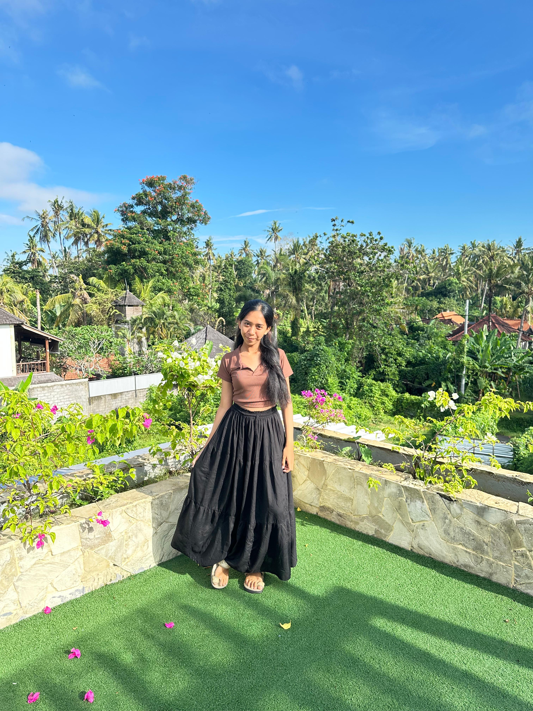

Universitas Hindu Negeri I Gusti Bagus Sugriwa
Denpasar

Ni Kadek Dwi Puspitasari
Welcome to my personal website
NIM:
2413231002
Prodi:
Informatika Denpasar Semester 2
Jl. Oleg No. 04, Dauh Yeh Cani, Abiansemal